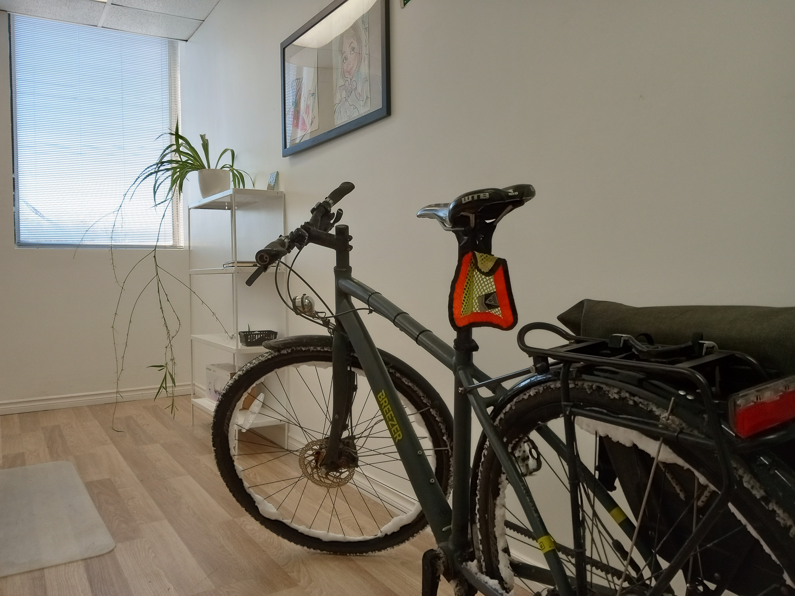

Warning: this page contains a fair amount of bike shedding!
Attention : cette page contient une bonne dose de « bikeshedding » (et de cabanons à vélo) !
If you have the chance to own a garage, I find this option to be the ideal storage location. However, this is not often the case for urban city dwellers.
Si vous avez la chance d'avoir un garage, c'est selon moi l'endroit idéal pour ranger un vélo. Ce n'est toutefois pas souvent le cas pour les gens qui habitent en ville.
A bicycle should ideally be stored in a dry and safe place, but this is not always possible. Keeping a marriage alive involves compromises and not leaving a bike full of dirt and snow in the living room might be one of them!
Idéalement, un vélo devrait être rangé dans un endroit sec et sûr, mais ce n'est pas toujours possible. Garder un couple en vie demande des compromis, et ne pas laisser un vélo plein de saleté et de neige dans le salon en fait peut-être partie !
Regarding safety, in my opinion a bike frame should be locked to something solid no matter which storage option is used (except maybe inside the house). I might be slightly paranoid but breaking into a garage or a shed is not something that is very hard for an experience theft. Regarding garages specifically, be also careful about alternate entrances such as a backdoor or window. I have heard sad stories about stolen bikes where the theft used back entrances that the owners did not think about securizing.
Côté sécurité, je crois que le cadre d'un vélo devrait toujours être attaché à quelque chose de solide, peu importe où il est rangé (sauf peut-être à l'intérieur de la maison). Je suis peut-être un peu paranoïaque, mais entrer par effraction dans un garage ou un cabanon n'a rien de bien difficile pour un voleur expérimenté. Pour les garages en particulier, méfiez-vous aussi des autres accès, comme une porte arrière ou une fenêtre. J'ai entendu de tristes histoires de vélos volés par des accès arrière que les propriétaires n'avaient pas pensé à sécuriser.
Another important safety aspect is visibility. If no one knows about a bicycle being stored somewhere, it runs much less chances of being stolen. This is why I would not recommend storing the bicycle in a yard, balcony or anywhere outside. Storing it permanently on public furniture is not something I would ever try (legal questions aside) as too exposed. However, sometimes it is necessary to lock a bike temporarily on public furniture. In this situation, one should be careful about not impeding the movement of pedestrians and handicaped people or strollers (access ramps are a common locking location).
La visibilité est un autre aspect important de la sécurité. Si personne ne sait qu'un vélo est rangé quelque part, il risque beaucoup moins d'être volé. C'est pourquoi je ne recommande pas de le laisser dans une cour, sur un balcon ou ailleurs à l'extérieur. Le laisser en permanence attaché au mobilier urbain n'est pas quelque chose que j'essaierais (questions légales mises à part) : c'est beaucoup trop exposé. Il faut toutefois parfois attacher un vélo temporairement au mobilier urbain. Dans ce cas, faites attention de ne pas nuire aux déplacements des piétons, des personnes handicapées ou des poussettes (les rampes d'accès sont un endroit où on attache souvent les vélos).
Also, during winter, one has to be careful about sidewalk plowing equipment. In Montreal we have those catepillar vehicles that push the snow onto the street - the drivers of these things are not always mindful about bicycles and can damage them. I have even heard of competitions amongst those drivers as to who would break the most bikes!
L'hiver, il faut aussi se méfier du déneigement des trottoirs. À Montréal, nous avons ces chenillettes qui poussent la neige dans la rue, et leurs conducteurs ne font pas toujours attention aux vélos, qu'ils peuvent endommager. J'ai même entendu parler de concours entre conducteurs pour savoir qui briserait le plus de vélos !
To lock a bicycle, I prefer chains made of thick links to U-locks for their flexibility. Don't buy the tiny wire locks as these are worthless and easily cut by a thief. At the end of the day, any locking system can be broken, but the goal is to at least ensure that the thief requires special equipment and needs a significant amount of time to perform the theft, in which case he might give up.
Pour attacher un vélo, je préfère les chaînes à gros maillons aux cadenas en U, pour leur souplesse. N'achetez pas les petits câbles antivol : ils ne valent rien et un voleur les coupe facilement. Au bout du compte, n'importe quel antivol peut être forcé, mais le but est au moins de s'assurer que le voleur ait besoin d'outils spéciaux et de beaucoup de temps pour commettre son vol, auquel cas il pourrait abandonner.
In a garage or shed that has a concrete floor, it is possible to install an anchor in the ground into which the bicycle may be locked. Some well-known locking solutions companies such as Abus and Kryptonite make them. These are not necessarily cheap but they represent a good investment in my opinion. I would say that investing up to 25% of the bicycle value into locking systems is worth it, so say 500$ for a 2000$ bike.
Dans un garage ou un cabanon au plancher de béton, on peut installer un ancrage au sol auquel attacher le vélo. Des fabricants d'antivols bien connus comme Abus et Kryptonite en offrent. Ce n'est pas donné, mais c'est un bon investissement à mon avis. Je dirais que consacrer jusqu'à 25 % de la valeur du vélo à l'antivol en vaut la peine, soit environ 500 $ pour un vélo de 2000 $.
When considering locking equipment, think about not just the value of the bicycle itself but the time investment placed into customizing it and even its "emotional" value to you, and the lost capability to commute when the bike is stolen. You should easily agree with me that investing a sizeable fraction of the bike value in its safety is not excessive at all when taking those factors into consideration. In any case, if your bike is ever stolen, you will most likely come to the conclusion that you should buy the necessary locking gear for your next one. At the end of the day you'll have to make that expense anyway, with the diffence being that now you'll have a stolen bike on top of this to account for.
Quand vous choisissez un antivol, pensez non seulement à la valeur du vélo lui-même, mais aussi au temps investi pour le personnaliser, à sa valeur « sentimentale » et au fait de ne plus pouvoir faire vos trajets s'il est volé. Vous conviendrez facilement qu'en tenant compte de tout ça, consacrer une bonne part de la valeur du vélo à sa sécurité n'a rien d'excessif. De toute façon, si votre vélo se fait voler un jour, vous en viendrez probablement à la conclusion qu'il faut acheter l'antivol nécessaire pour le prochain. Au bout du compte, vous devrez faire cette dépense de toute façon, sauf qu'en plus, vous aurez perdu un vélo.
I do not personally care for the storage location to be heated or not. In my experience, leaving a well winterized bicycle in an unheated spot is just fine. I use a bike shed which keeps snow and rain away from the bike and prevents rust. In fact based on my experience with cars I believe that an unheated space is even better than a heated one.
Personnellement, que l'endroit soit chauffé ou non m'importe peu. D'après mon expérience, laisser un vélo bien préparé pour l'hiver dans un endroit non chauffé ne pose aucun problème. J'utilise un cabanon qui garde le vélo à l'abri de la neige et de la pluie et prévient la rouille. En fait, en me fiant à mon expérience avec les voitures, je crois même qu'un espace non chauffé est préférable à un espace chauffé.
One thing that really accelerates rust formation is a series of freeze-thaw cycles. There is nothing wrong about storing the bike permanently under 0 ℃, as long as the storage location is dry. The thought that the location should be heated up might come from the pervasive car culture in North America. Unlike a car, there are no battery or other electric equipment that risk not starting up on a standard bike.
Ce qui accélère vraiment la formation de rouille, ce sont les cycles de gel et de dégel. Il n'y a aucun mal à garder le vélo en permanence sous 0 ℃, tant que l'endroit est sec. L'idée qu'il faut un endroit chauffé vient peut-être de la culture automobile omniprésente en Amérique du Nord. Contrairement à une voiture, un vélo ordinaire n'a pas de batterie ni d'équipement électrique qui risque de ne pas démarrer.
One situation where I find taking the bike to a heated place helps is during extreme cold waves (-20 ℃ or less). On my bike, I noticed that the brake cables or callipers of my mechanical disc brakes become stiff in those conditions (not yet 100% sure about which component is the culprit here).
Une situation où je trouve utile de mettre le vélo au chaud, c'est pendant les vagues de froid extrême (-20 ℃ ou moins). Sur mon vélo, j'ai remarqué que les câbles ou les étriers de mes freins à disque mécaniques deviennent raides dans ces conditions (je ne suis pas encore sûr à 100 % de la pièce en cause).
In extremely cold conditions, once the bike levers are pulled, the brakes might not release again. As you may guess, riding against the bike's brakes is extremely draining! I find that when that happens, heating the bike after the morning commute might help, but even then the effect risks being temporary.
Par grand froid, une fois les leviers actionnés, les freins peuvent ne plus se relâcher. Comme vous pouvez l'imaginer, pédaler contre ses propres freins est épuisant ! Quand ça arrive, je trouve que réchauffer le vélo après le trajet du matin peut aider, mais même là, l'effet risque d'être temporaire.
At a minimum, it allows unblocking the brakes and saving the return commute. If only one out of the two brakes is problematic, one may then avoid using that one on the way back. I find that in winter the bike's natural deceleration is more important than in summer due to factors such as snow, lower tire pressure and higher friction of different parts such as the freewheel. It is possible to ride quite a distance without actually having to hit the brakes all that much.
Au minimum, ça permet de débloquer les freins et de sauver le trajet du retour. Si un seul des deux freins pose problème, on peut alors éviter de s'en servir en revenant. Je trouve qu'en hiver, le vélo ralentit naturellement davantage qu'en été, à cause de la neige, d'une pression des pneus plus basse et d'une plus grande friction de certaines pièces, comme la roue libre. On peut rouler une bonne distance sans avoir vraiment besoin de freiner beaucoup.

See full section about water in cables here.
Voir la section complète sur l'eau dans les câbles ici.
Storing the bike in a heated place vertically can sometimes provide a temporary fix for stuck cables by allowing water to drip out of the cables, but the problem might come again unless this is how the bike is permanently stored (and even then, you might get issues if water enters during rides or when parking outside, so a proper long-term fix is preferable).
Ranger le vélo à la verticale dans un endroit chauffé peut parfois régler temporairement le problème des câbles bloqués en laissant l'eau s'égoutter, mais le problème risque de revenir, à moins que le vélo soit toujours rangé ainsi (et même là, vous pourriez avoir des problèmes si l'eau entre pendant vos sorties ou quand vous stationnez dehors, alors une vraie solution à long terme est préférable).